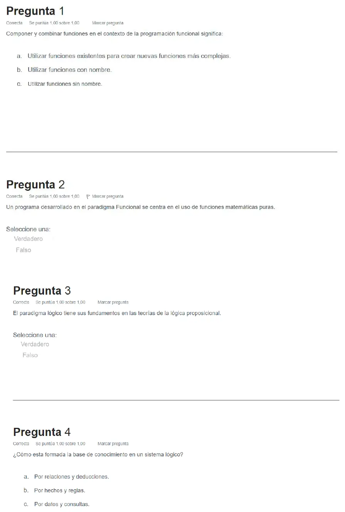
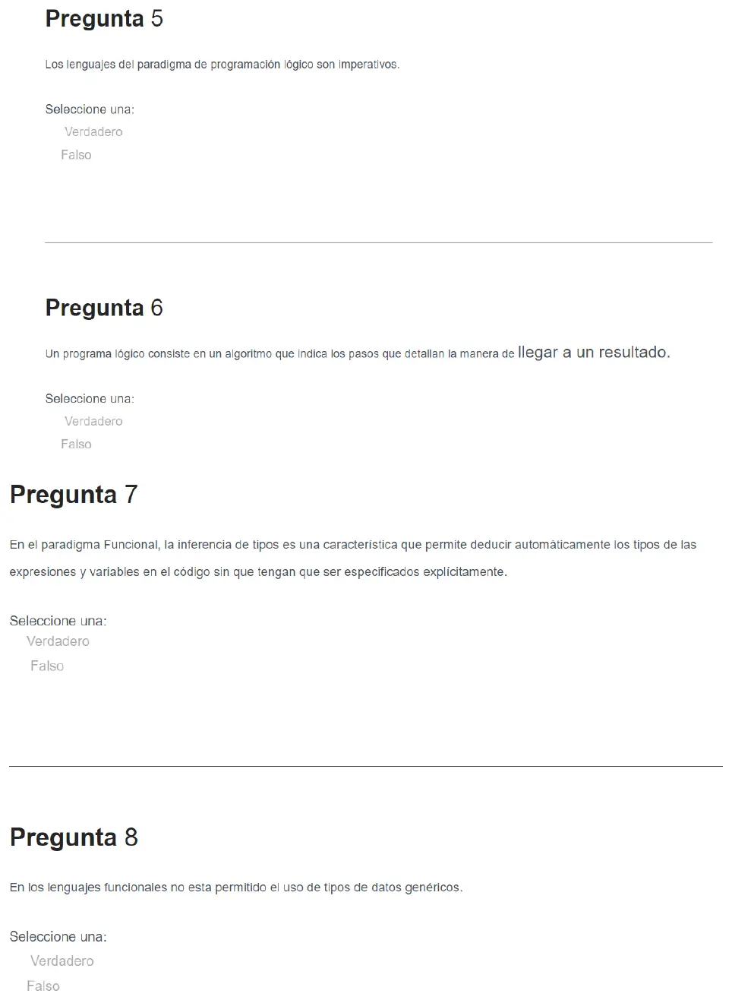
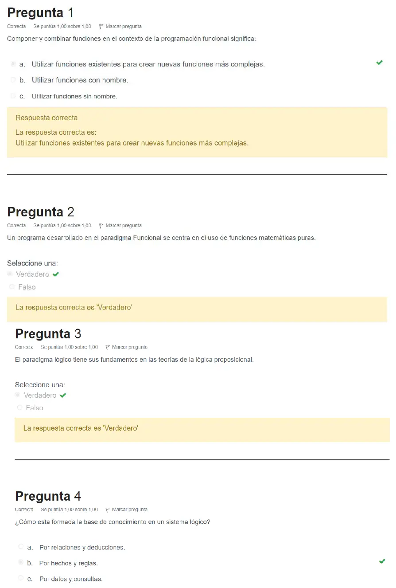
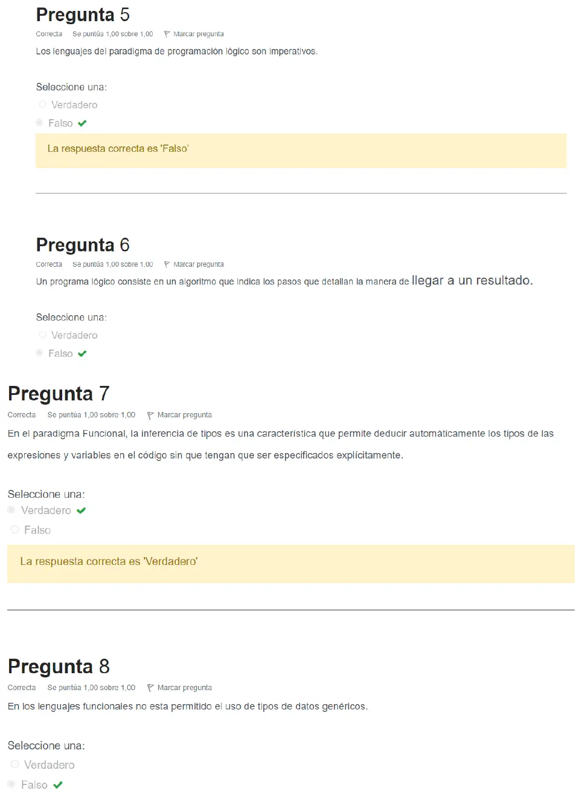

Parcial de regularización, 15/06/2023, versión 2 (lógico y funcional)
Parcial de regularización, 15/06/2023
Enunciado




Preguntas con opciones
Salen de este examen. Dejalas para el final, porque las opciones pueden dar pistas.
- 1
¿Qué son las reglas en el paradigma lógico?
Se tomó: Parcial para regularizar 15/06/2023, versión 1, pregunta 1
Es la respuesta que marca la corrección del campus.
- 2
Componer y combinar funciones en programación funcional significa:
Se tomó: Parcial para regularizar 15/06/2023, versión 2, pregunta 1
Es la respuesta que marca la corrección del campus.
Resolución
Ver la resolución: Las 8 preguntas, con la corrección del campus
Es la corrección automática del campus o del aula virtual. Son las hojas originales. Tocá una para verla en grande.




¿Cómo te fue?
Marcá cada tema del examen. Las preguntas con opciones ya se corrigieron solas.
- Paradigma lógicoParadigma lógico, en Parcial de regularización
- Paradigma funcionalParadigma funcional, en Parcial de regularización